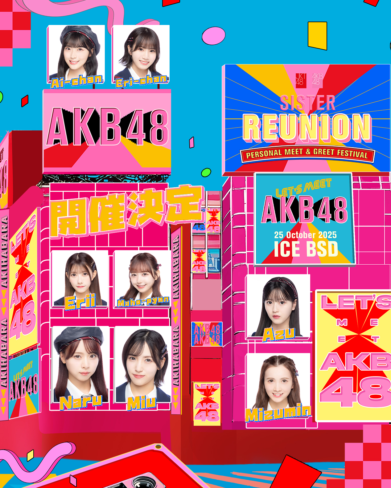
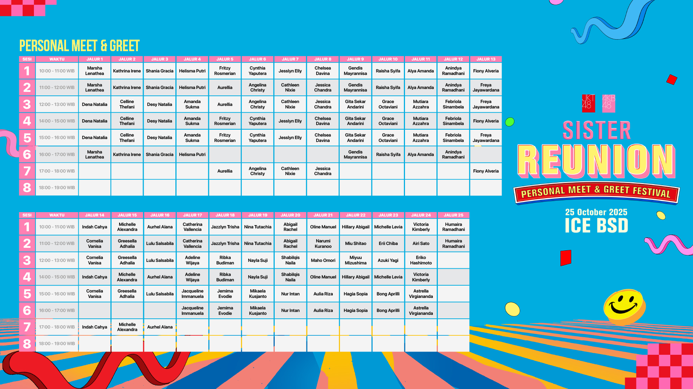
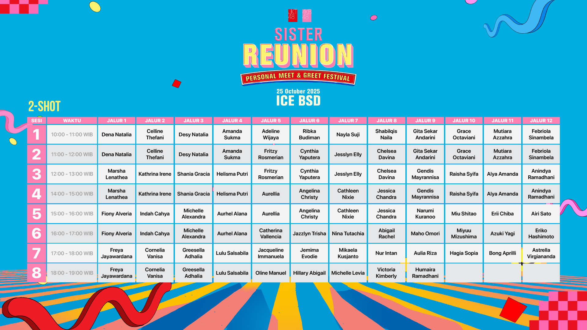

Jkt48 Akhirnya Mengumumkan jadwal Penjualan & TimeTablenya Nihhh
Jadi,JKT48 akan segera mengadakan kembali Personal Meet & Greet (M&G) Festival dengan tema "SISTER REUNION", karena untuk pertama kalinya member AKB48 akan berpartisipasi dan langsung bertemu dengan semuanya! Acara akan diselenggarakan pada 25 Oktober 2025 di ICE Indonesia, BSD City, Tangerang.
Berikut adalah detail penting yang perlu diperhatikan:
Jadwal Penjualan Tiket
Untuk Anggota OFC
- Tiket 2-Shot: Mulai dijual pada Rabu, 17 September 2025, pukul 18.00 WIB.
Photocard (Bonus Tiket M&G): Mulai dijual pada Kamis, 18 September 2025, pukul 18.00 WIB.
Untuk Umum (General)
Penjualan Tiket 2-Shot dan Photocard (Bonus Tiket M&G) akan dimulai pada Jumat, 19 September 2025, pukul 18.00 WIB.
🗓️ Lineup member AKB48
Inilah member AKB48 yang akan hadir di “SISTER REUNION” Personal Meet & Greet Festival!
Timetable Sesi Meet & Greet dan 2-Shot
Harap selalu cek kembali timetable berikut sebelum melakukan pembelian tiket.
TIMETABLE PERSONAL MEET & GREET
TIMETABLE 2-SHOT
🔔 Penting Diketahui
Pastikan untuk mengikuti pengumuman resmi dari JKT48.com dan akun media sosial terkait untuk info terkini seperti daftar member yang hadir, harga tiket, dan protokol keselamatan.
Segitu Aja dari mimin kamu bisa cek langsung ke web JKT48 untuk informasi lebih Lanjut yawww